第3章 演習解答例
# データハンドリングで利用する外部パッケージの読み込み
require(dplyr)
require(tidyr)
# 表示で利用する外部パッケージの読み込み
require(ggplot2)
require(DT)
require(knitr)はじめに
本資料は『ソフトウェアメトリクス統計分析入門』(以降、テキストと記載)の第3章の演習問題をRで解いた際の解答例を示したものです。また、R Markdownを使うメリットを示すための一手段として作成していますので、テキストにおける計算方法とは異なる部分もあります。本資料で使用しているデータの入手に関してはテキストにてご確認下さい。
本資料がHTML形式の場合、Rのコードを参照するには右側にある[Code]ボタンをクリックして下さい。なお、JavaScriptは必ずOnにしてご覧下さい。
演習 3.1
完了したプロジェクトを上流でのレビュー実施度合いが、多い、中ぐらい、少ない、の3 段階に分類しました． そして、それらのプロジェクトの最終システムテスト工程での欠陥密度のデータは以下のとおりです。 上流でしっかりとレビューを実施すれば、システムテストでの欠陥密度は低下することが期待できます。 果たして、その期待どおり上流でのレビューは、下流での品質向上に効果があるといえるでしょうか。
データの設定
本演習で利用するデータは予めCSVファイルとして保存されているものとします。
可視化
分析前に対象データを可視化してみます。
x %>%
ggplot(aes(x = review.freq, y = defect.density)) +
geom_boxplot() +
geom_jitter(colour = "red") +
xlab("レビューの実施度合い") + ylab("欠陥密度")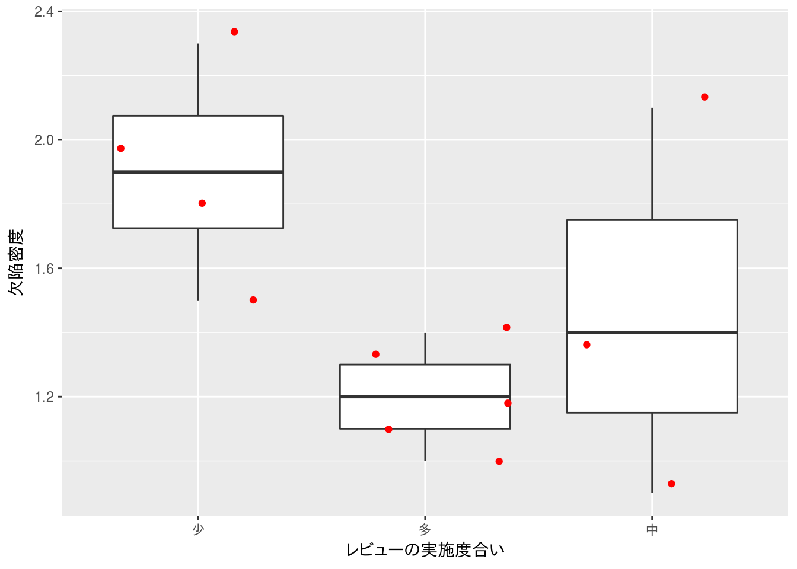
一元配置分散分析
読み込んだデータは上記のように1変数と因子のですので、そのまま分析を行います。
result.aov <- aov(defect.density ~ review.freq, data = x)
summary(result.aov)## Df Sum Sq Mean Sq F value Pr(>F)
## review.freq 2 1.093 0.5467 4.217 0.051 .
## Residuals 9 1.167 0.1296
## ---
## Signif. codes: 0 '***' 0.001 '**' 0.01 '*' 0.05 '.' 0.1 ' ' 1多重比較
一元配置分散分析の結果、\(5\%\)有意で帰無仮説は棄却されませんでしたが、多重比較により因子間に差を確認してみます。
result.pairs <- multcomp::glht(result.aov,
linfct = multcomp::mcp(review.freq = "Tukey"))
summary(result.pairs)##
## Simultaneous Tests for General Linear Hypotheses
##
## Multiple Comparisons of Means: Tukey Contrasts
##
##
## Fit: aov(formula = defect.density ~ review.freq, data = x)
##
## Linear Hypotheses:
## Estimate Std. Error t value Pr(>|t|)
## 多 - 少 == 0 -0.7000 0.2415 -2.898 0.0421 *
## 中 - 少 == 0 -0.4333 0.2750 -1.576 0.3035
## 中 - 多 == 0 0.2667 0.2629 1.014 0.5862
## ---
## Signif. codes: 0 '***' 0.001 '**' 0.01 '*' 0.05 '.' 0.1 ' ' 1
## (Adjusted p values reported -- single-step method)多重比較の結果、一元配置分散分析では有意差は認められなかったもののレビュー頻度’多-小’において有意差が認められます。
結果の可視化
因子間の平均の差の95%信頼区間は以下の通りとなります。
x.result <- as.data.frame(confint(result.pairs)$confint) %>%
mutate(review.freq = as.factor(row.names(.))) %>%
select(factor = review.freq, lo = lwr, mu = Estimate, up = upr)
ggplot(x.result, aes(x = factor, y = mu)) +
geom_point(size = 3) +
geom_errorbar(aes(ymin = lo, ymax = up), width = 0.05, colour = "blue") +
xlab("レビュー頻度") + ylab("レビュー密度の平均値の差") +
theme(axis.text = element_text(size = 12)) +
ggtitle("95%信頼区間") +
coord_flip()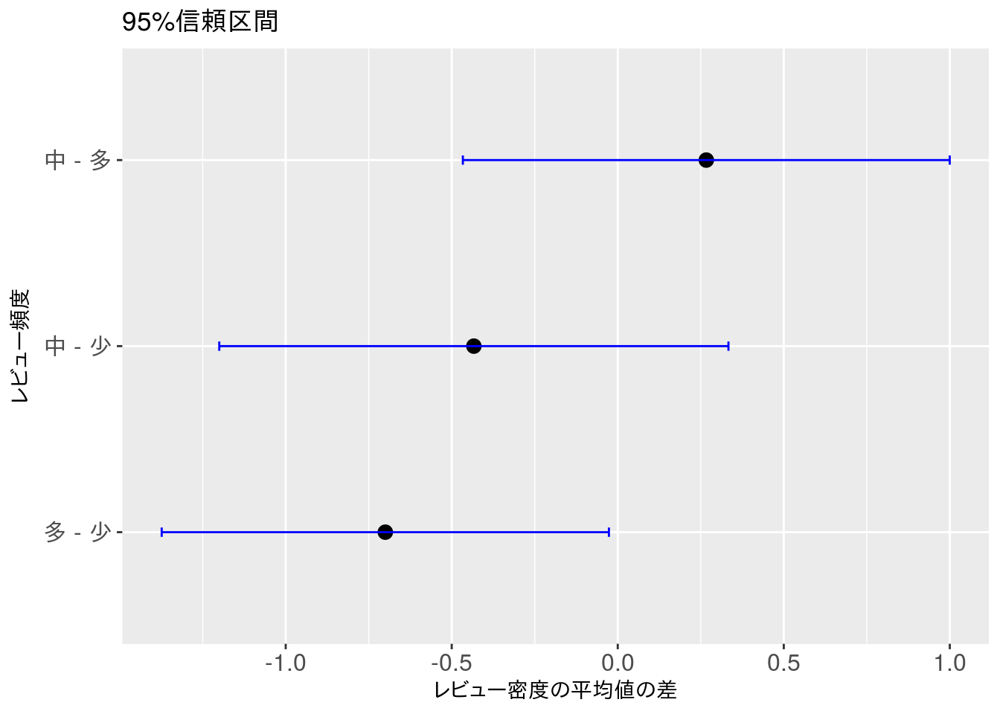
結果の解釈
一元配置分散分析において有意差は認められなかったものの多重比較を行うと有意差が認めれられています。これは、以下のような解釈(定性分析)により有意差は認められないと結論できのではないでしょうか？
定性分析
参考)因子毎の平均値の95%信頼区間
n <- 2
x.result <- x %>%
group_by(review.freq) %>%
summarize(lo = round(t.test(defect.density)$conf.int[1], n),
mu = round(t.test(defect.density)$estimate, n),
up = round(t.test(defect.density)$conf.int[2], n),
num = n())
ggplot(x.result, aes(x = review.freq, y = mu)) +
geom_point(size = 3) +
geom_errorbar(aes(ymin = lo, ymax = up), width = 0.1, colour = "blue") +
xlab("レビューの実施度合い") + ylab("レビュー密度") +
theme(axis.text = element_text(size = 12)) +
ggtitle("因子毎の母平均の95%信頼区間")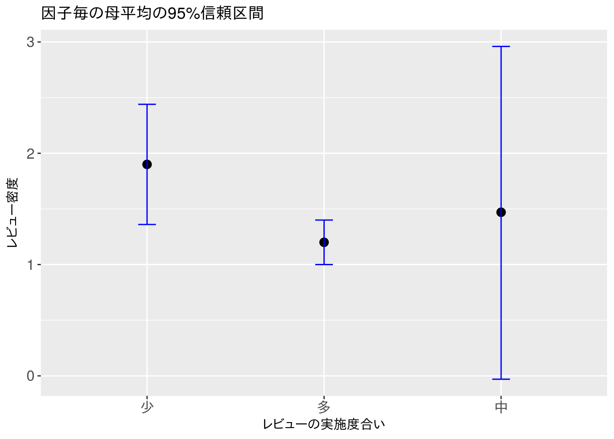
演習 3.2
システムの機能を改良することになりました。GUI プロトタイプの変更案をA、B、C の3 つ作成しました。 現行も加えて4 つのGUI にて5 段階でユーザビリティ評価を行った結果が以下です。 GUI デザインの違いがユーザビリティに影響を与えているといえるでしょうか？また、どのGUI デザインを採用すべきでしょうか？
データの設定
本演習で利用するデータは予めCSVファイルとして保存されているものとします。
# 演習のデータを変形せずに読み込み、分析用データフレームに変換する
file <- "./data/ex3_2.csv"
x <- read.csv(file, header = FALSE, row.names = 1, sep = ",",
fileEncoding = "CP932") %>%
# システム構成の列を行名に設定して転置するのがポイント
t() %>%
as.data.frame() %>%
tidyr::gather(key = model, value = eval) %>%
mutate(model = as.factor(model))
# mcp{multcomp}では因子型である必要があるため文字列型から変換
df_print(x)可視化
分析前に対象データを可視化してみます。
x %>%
ggplot(aes(x = model, y = eval)) +
# geom_violin() +
# geom_boxplot(width = 0.1) +
geom_boxplot() +
# geom_jitter(colour = "blue") +
geom_dotplot(binaxis = "y", stackdir = "center", dotsize = 0.5,
fill = "blue", colour = "blue") +
stat_summary(fun.y = mean, geom = "point", shape = 18, size = 3,
color = "red") +
xlab("GUIデザイン") + ylab("評価結果(5段階)")## `stat_bindot()` using `bins = 30`. Pick better value with `binwidth`.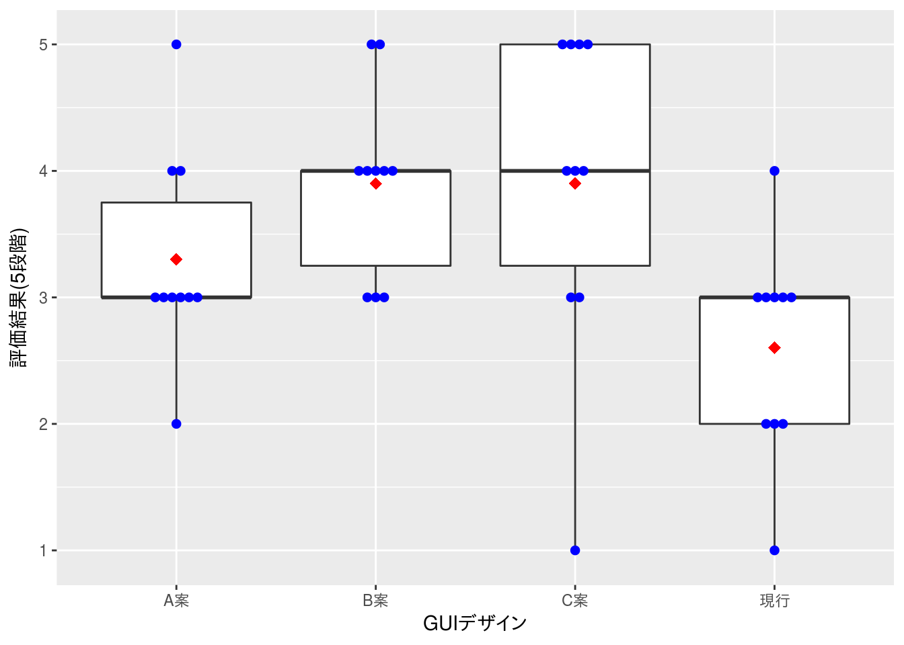
x %>%
ggplot(aes(x = eval, fill = model)) +
geom_histogram(binwidth = 1, alpha = 0.5) +
facet_wrap(~ model) +
xlab("評価結果(5段階)") + ylab("度数")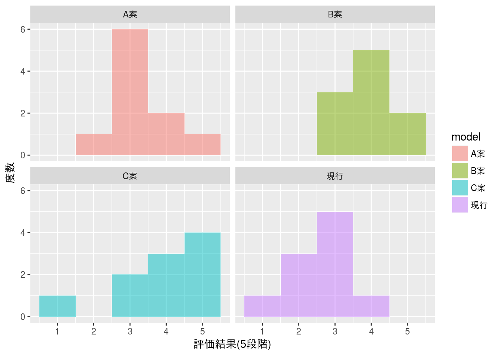
現行案に対して、A, B, Cの各案とも評価結果が良くなっていることの見当はつきますが、どの案がベストなのか、本当に良くなっているかは、グラフだけでは断言できません。
一元配置分散分析
そこで、一元配置分散分析を行うことで、各案の評価に有意な差があるか確認します。
result.aov <- aov(eval ~ model, data = x)
summary(result.aov)## Df Sum Sq Mean Sq F value Pr(>F)
## model 3 11.48 3.825 4.263 0.0112 *
## Residuals 36 32.30 0.897
## ---
## Signif. codes: 0 '***' 0.001 '**' 0.01 '*' 0.05 '.' 0.1 ' ' 1一元配置分散分析の結果、\(5\%\)有意で帰無仮説は棄却されましたので、因子間に有意な差があることが分かります。
多重比較
そこで、多重比較によりどの因子間に有意差があるのかを確認します。
result.pairs <- multcomp::glht(result.aov,
linfct = multcomp::mcp(model = "Tukey"))
summary(result.pairs)##
## Simultaneous Tests for General Linear Hypotheses
##
## Multiple Comparisons of Means: Tukey Contrasts
##
##
## Fit: aov(formula = eval ~ model, data = x)
##
## Linear Hypotheses:
## Estimate Std. Error t value Pr(>|t|)
## B案 - A案 == 0 6.000e-01 4.236e-01 1.416 0.4977
## C案 - A案 == 0 6.000e-01 4.236e-01 1.416 0.4976
## 現行 - A案 == 0 -7.000e-01 4.236e-01 -1.652 0.3632
## C案 - B案 == 0 -1.221e-15 4.236e-01 0.000 1.0000
## 現行 - B案 == 0 -1.300e+00 4.236e-01 -3.069 0.0203 *
## 現行 - C案 == 0 -1.300e+00 4.236e-01 -3.069 0.0203 *
## ---
## Signif. codes: 0 '***' 0.001 '**' 0.01 '*' 0.05 '.' 0.1 ' ' 1
## (Adjusted p values reported -- single-step method)多重比較の結果、現行のGUIとB案、C案との間で有意な差が認められます。
結果の可視化
多重比較の結果である因子間の平均の差の95%信頼区間は以下の通りになります。
x.result <- as.data.frame(confint(result.pairs)$confint) %>%
mutate(model = as.factor(row.names(.))) %>%
select(factor = model, lo = lwr, mu = Estimate, up = upr)
ggplot(x.result, aes(x = factor, y = mu)) +
geom_point(size = 3) +
geom_errorbar(aes(ymin = lo, ymax = up), width = 0.05, colour = "blue") +
xlab("GUIデザイン") + ylab("5段階評価結果の平均の差") +
theme(axis.text = element_text(size = 12)) +
ggtitle("95%信頼区間") +
coord_flip()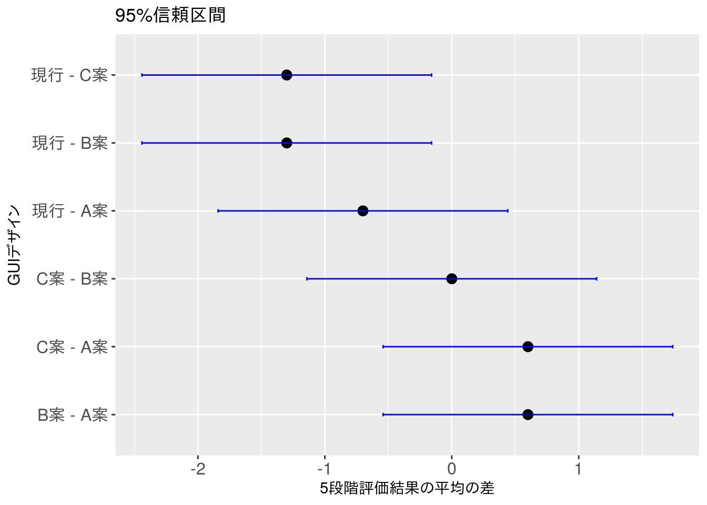
ただ、これだけでは、B案とC案のどちらを選べば良いか、数値だけでは判断がつきません。
因子毎の平均値の95%信頼区間
そこで、始めに戻り各因子(GUIデザイン)の評価結果の平均値と95%信頼区間を見てみます。
n <- 2
x.result <- x %>%
group_by(model) %>%
summarize(lo = round(t.test(eval)$conf.int[1], n),
mu = round(t.test(eval)$estimate, n),
up = round(t.test(eval)$conf.int[2], n),
num = n())
ggplot(x.result, aes(x = model, y = mu)) +
geom_point(size = 3) +
geom_errorbar(aes(ymin = lo, ymax = up), width = 0.1, colour = "blue") +
xlab("プロトタイプ") + ylab("5段階評価値") +
theme(axis.text = element_text(size = 12)) +
ggtitle("因子毎の母平均の95%信頼区間")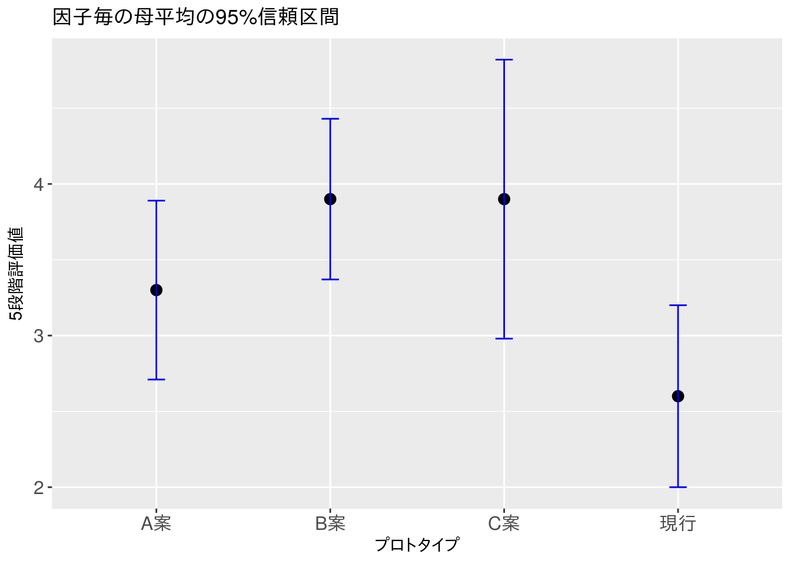
これを見るとC案の評価はB案の評価と比べると評価が散らばっていることが分かります。言い換えるとC案の平均的な評価はB案と同等ですが、人により好き嫌いが別れると言えます。したがって、今回はより万人受けするB案を採用することを推奨することとします。
演習 3.3
システム構成の違いとソフトウェア設定のどちらがシステムのパフォーマンスに影響を与えるのかを調べるためにそれぞれ4水準と3水準を用意して全組合せでパフォーマンステストを行い、以下のようなデータを収集しました。 システム構成の違いとソフトウェア設定のどちらがパフォーマンスに与えるといえるでしょうか？ 二元配置分散分析を行ってください。
データの設定
本演習で利用するデータは予めCSVファイルとして保存されているものとします。
可視化
分析前に対象データを可視化してみます。
x %>%
ggplot(aes(x = system, y = r.time)) +
geom_boxplot() +
geom_jitter(colour = "red") +
xlab("システム構成") + ylab("レスポンス時間[msec]")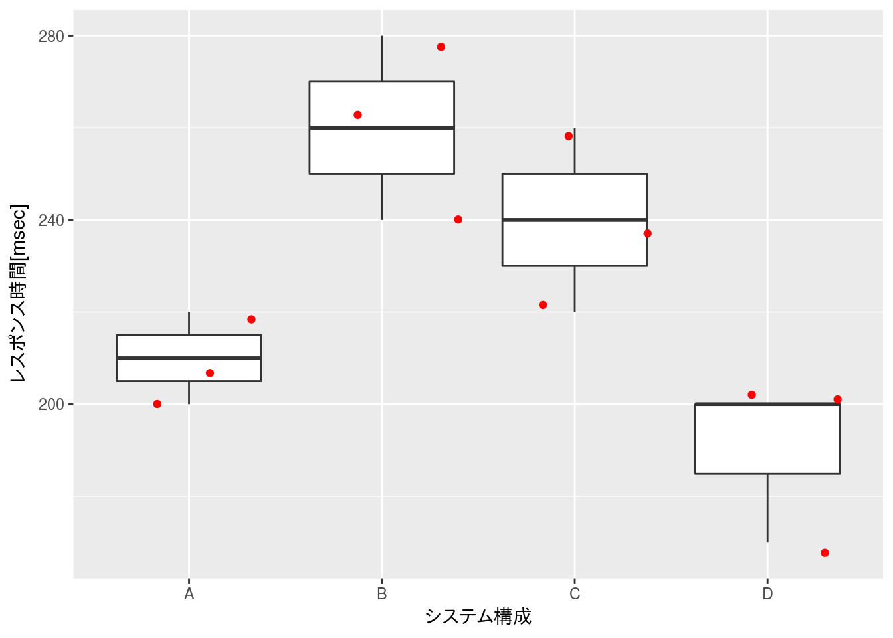
システム構成に着目すると構成Aと構成Dが優れているように見えます。
x %>%
ggplot(aes(x = software, y = r.time)) +
geom_boxplot() +
geom_jitter(colour = "red") +
xlab("ソフトウェア設定") + ylab("レスポンス時間[msec]")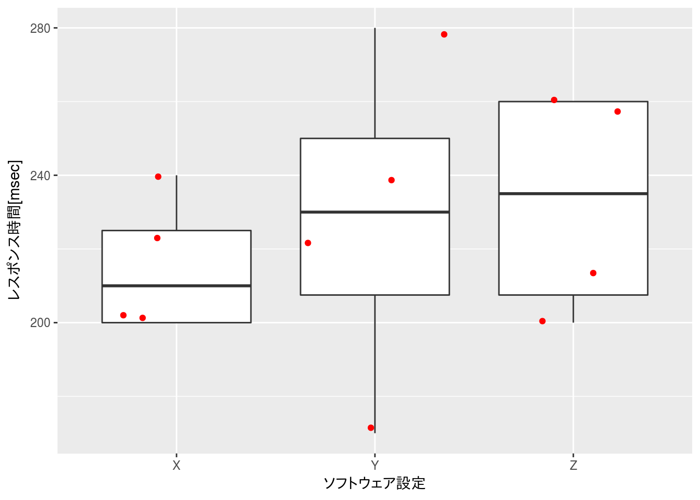
一方、ソフトウェア設定に着目すると設定Xが他の設定に比べると優れているように見えますが、どちらのシステム構成との組み合わせが良いのかはグラフからは判断できません。
二元配置分散分析
そこで、二元配置の分散分析を行ってみます。
result.aov <- aov(r.time ~ system + software, data = x)
summary(result.aov)## Df Sum Sq Mean Sq F value Pr(>F)
## system 3 8700 2900.0 9.943 0.0096 **
## software 2 650 325.0 1.114 0.3877
## Residuals 6 1750 291.7
## ---
## Signif. codes: 0 '***' 0.001 '**' 0.01 '*' 0.05 '.' 0.1 ' ' 1二元配置分散分析の結果、システム構成に対しては\(5\%\)有意で帰無仮説が棄却されていますが、ソフトウェア設定に対しては帰無仮説が棄却されていないことが分かります。
多重比較
そこで、二元配置分散分析の結果、システム構成に対する多重比較を行いどの因子間に有意差があるのかを確認します。
result.pairs <- multcomp::glht(result.aov,
linfct = multcomp::mcp(system = "Tukey"))
summary(result.pairs)##
## Simultaneous Tests for General Linear Hypotheses
##
## Multiple Comparisons of Means: Tukey Contrasts
##
##
## Fit: aov(formula = r.time ~ system + software, data = x)
##
## Linear Hypotheses:
## Estimate Std. Error t value Pr(>|t|)
## B - A == 0 50.00 13.94 3.586 0.04346 *
## C - A == 0 30.00 13.94 2.151 0.23865
## D - A == 0 -20.00 13.94 -1.434 0.52484
## C - B == 0 -20.00 13.94 -1.434 0.52492
## D - B == 0 -70.00 13.94 -5.020 0.00969 **
## D - C == 0 -50.00 13.94 -3.586 0.04347 *
## ---
## Signif. codes: 0 '***' 0.001 '**' 0.01 '*' 0.05 '.' 0.1 ' ' 1
## (Adjusted p values reported -- single-step method)結果の可視化
因子間の平均の差の95%信頼区間は以下の通りとなります。
x.result <- as.data.frame(confint(result.pairs)$confint) %>%
mutate(system = as.factor(row.names(.))) %>%
select(factor = system, lo = lwr, mu = Estimate, up = upr)
ggplot(x.result, aes(x = factor, y = mu)) +
geom_point(size = 3) +
geom_errorbar(aes(ymin = lo, ymax = up), width = 0.05, colour = "blue") +
xlab("システム構成") + ylab("レスポンスタイムの平均値の差[msec]") +
theme(axis.text = element_text(size = 12)) +
ggtitle("95%信頼区間") +
coord_flip()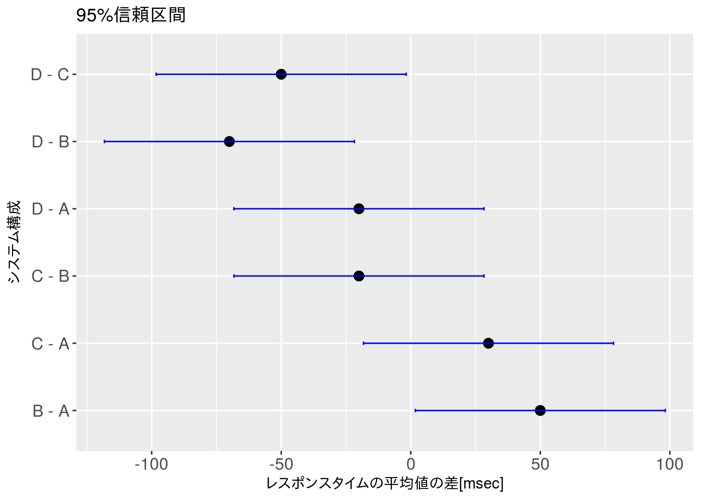
この結果から
- システム構成Aはシステム構成B,Cに比べてレスポンスタイムの平均値が低い
- システム構成Aはシステム構成Dに比べてレスポンスタイムの平均値が高い
- システム構成Dはシステム構成A,B,Cに比べてレスポンスタイムの平均値が低い
となります。単純にレスポンスタイムの平均値だけで決めるのであればシステム構成Dを選択すればよいことになります。しかし、システム構成AとDの平均値の差の95%信頼区間を確認すると必ずもシステム構成Dのレスポンスタイムが短いとは言い切れません。
因子毎の平均値の95%信頼区間
そこで、各システム構成の平均値の95%信頼区間を確認してみます。
n <- 2
x.result <- x %>%
group_by(system) %>%
summarize(lo = round(t.test(r.time)$conf.int[1], n),
mu = round(t.test(r.time)$estimate, n),
up = round(t.test(r.time)$conf.int[2], n),
num = n())
ggplot(x.result, aes(x = system, y = mu)) +
geom_point(size = 3) +
geom_errorbar(aes(ymin = lo, ymax = up), width = 0.1, colour = "blue") +
xlab("システム構成") + ylab("5段階評価値") +
theme(axis.text = element_text(size = 12)) +
ggtitle("因子毎の母平均の95%信頼区間")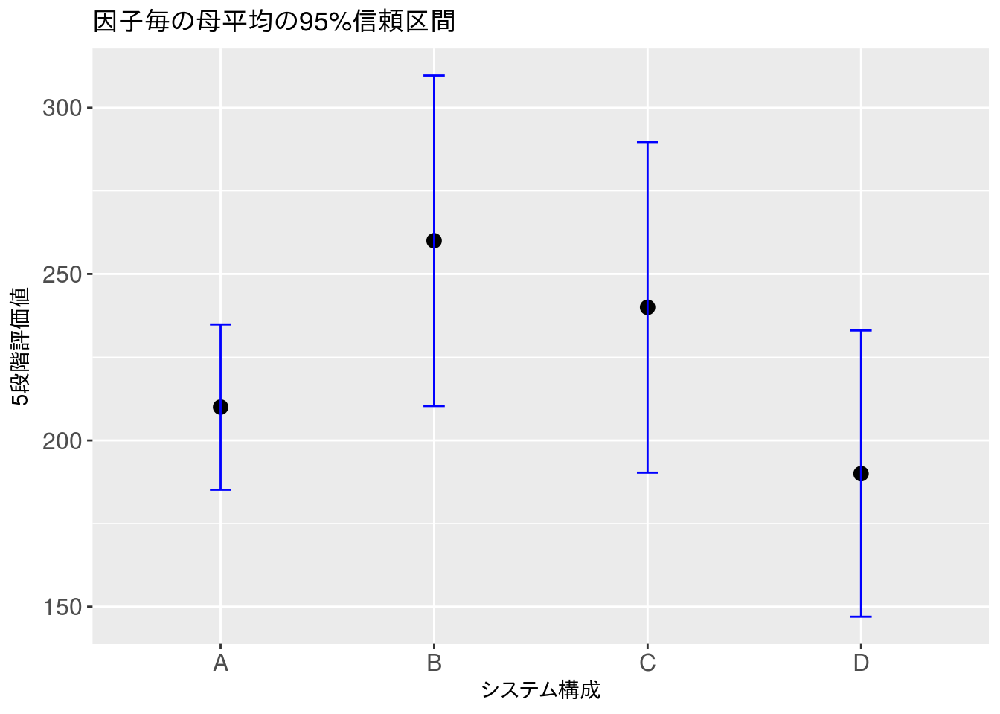
平均値でみるとシステム構成Dの方がレスポンスタイムが短いですが、95%信頼区間を見るとシステム構成Aの方が狭くレスポンスタイムにばらつきがありません。これより
- 安定したレスポンスタイムが求められる場合はシステム構成A
- 全体として短いレスポンスタイムが求められる場合はシステム構成D
という選択ができると考えます。
参考)多重比較
二元配置分散分析の結果、ソフトウェアに対しては\(5\%\)有意で帰無仮説は棄却されなかったが、多重比較により因子間の差を確認してみます。
result.pairs <- multcomp::glht(result.aov,
linfct = multcomp::mcp(software = "Tukey"))
summary(result.pairs)##
## Simultaneous Tests for General Linear Hypotheses
##
## Multiple Comparisons of Means: Tukey Contrasts
##
##
## Fit: aov(formula = r.time ~ system + software, data = x)
##
## Linear Hypotheses:
## Estimate Std. Error t value Pr(>|t|)
## Y - X == 0 12.50 12.08 1.035 0.584
## Z - X == 0 17.50 12.08 1.449 0.377
## Z - Y == 0 5.00 12.08 0.414 0.911
## (Adjusted p values reported -- single-step method)x.result <- as.data.frame(confint(result.pairs)$confint) %>%
mutate(software = as.factor(row.names(.))) %>%
select(factor = software, lo = lwr, mu = Estimate, up = upr)
ggplot(x.result, aes(x = factor, y = mu)) +
geom_point(size = 3) +
geom_errorbar(aes(ymin = lo, ymax = up), width = 0.05, colour = "blue") +
xlab("ソフトウェア設定") + ylab("レスポンスタイムの平均値の差[msec]") +
theme(axis.text = element_text(size = 12)) +
ggtitle("95%信頼区間") +
coord_flip()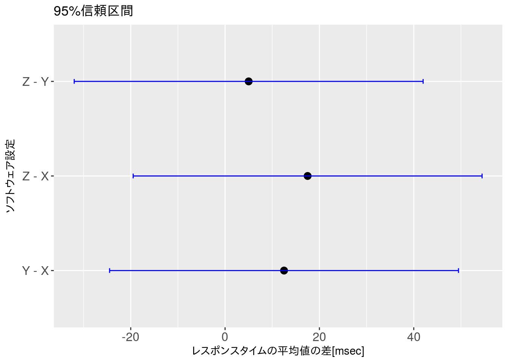
演習 3.4
以下に前著『データ指向のソフトウェア品質マネジメント』の3.2節で取り扱っているリリース後の品質問題が「なし」と「あり」の2つの群に分けた各プロジェクトのシステムテストでの欠陥密度のデータを掲載しています。 品質問題の「なし」のほうが「あり」よりも明らかに欠陥密度が小さいことを見出せれば、このメトリクスでリリース後の品質をある程度予見できることになります。 そうすれば、システムテストでの欠陥密度がリリース判定材料の一つとして活用できます。
このデータを使って、まずは分散比のF検定を行って、2つの群の分散が等しいとみなせるかの確認を行い、その結果にもとづいて、2群の母平均の差のt検定を適切なオプション指定で実施してください。
データの設定
本演習で利用するデータは予めCSVファイルとして保存されているものとします。
可視化
分析前に対象データを可視化してみます。
x %>%
tidyr::gather(value = defect.density) %>%
na.omit() %>%
ggplot(aes(x = key, y = defect.density)) +
geom_boxplot() +
geom_jitter(colour = "red") +
xlab("品質問題の有無") + ylab("欠陥密度")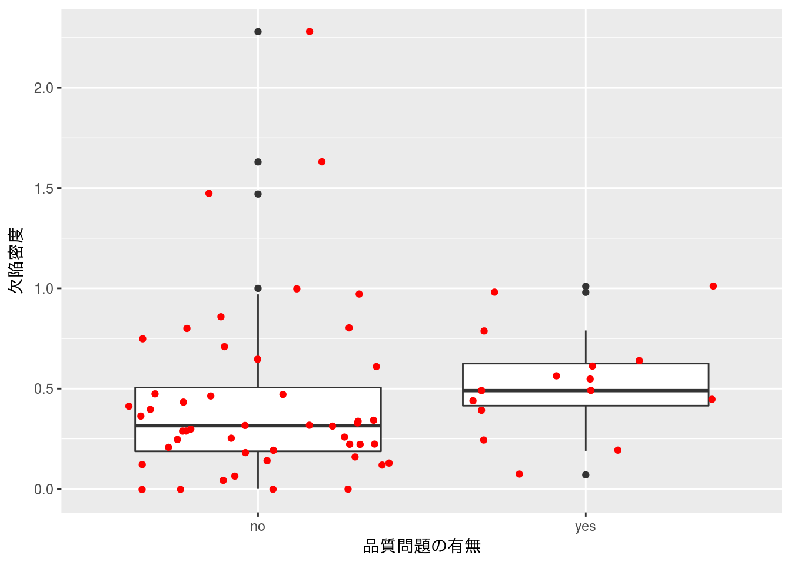
x %>%
tidyr::gather(value = defect.density) %>%
na.omit() %>%
ggplot(aes(x = defect.density, fill = key)) +
geom_histogram(binwidth = 0.5, alpha = 0.5) +
facet_wrap(~ key) +
xlab("欠陥密度") + ylab("度数")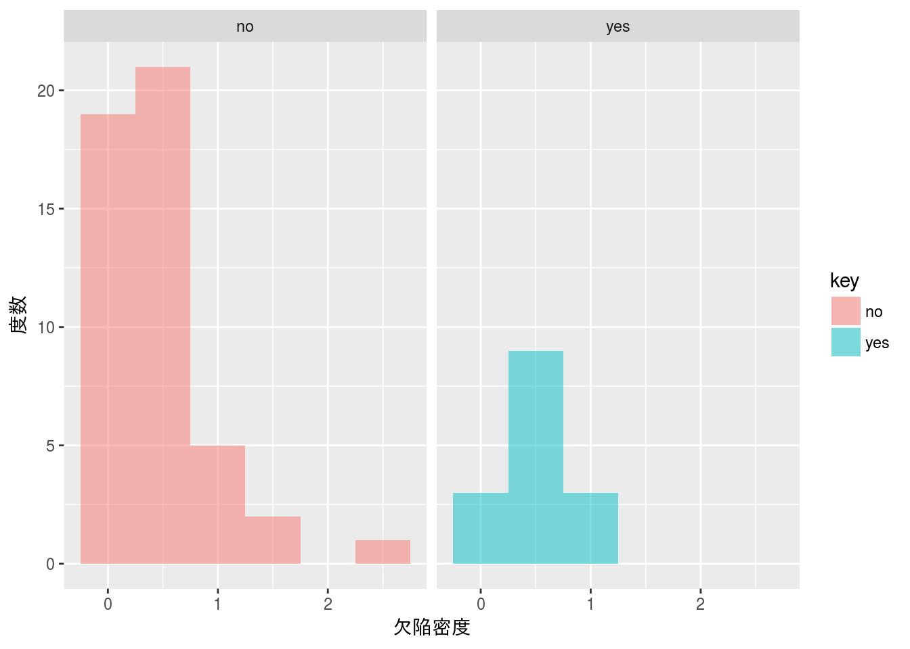
検定
result.var.test <- var.test(x$no, x$yes)
result.var.test##
## F test to compare two variances
##
## data: x$no and x$yes
## F = 2.8502, num df = 47, denom df = 14, p-value = 0.03591
## alternative hypothesis: true ratio of variances is not equal to 1
## 95 percent confidence interval:
## 1.076490 6.152851
## sample estimates:
## ratio of variances
## 2.850151if(result.var.test$p.value < 0.05){
# 帰無仮説が棄却される(不等分散)
t.test(x$no, x$yes, alternative = "less", paired = FALSE,
var.equal = FALSE)
} else {
# 帰無仮説が棄却されない(等分散と見なせる)
t.test(x$no, x$yes, alternative = "less", paired = FALSE,
var.equal = TRUE)
}##
## Welch Two Sample t-test
##
## data: x$no and x$yes
## t = -0.92355, df = 40.48, p-value = 0.1806
## alternative hypothesis: true difference in means is less than 0
## 95 percent confidence interval:
## -Inf 0.07096076
## sample estimates:
## mean of x mean of y
## 0.4404167 0.5266667一元配置分散分析
一元配置の分散分析でも行ってみます。
result.aov <- x %>%
tidyr::gather(value = defect.density) %>%
na.omit() %>%
mutate(key = as.factor(key)) %>%
aov(defect.density ~ key, data = .)
summary(result.aov)## Df Sum Sq Mean Sq F value Pr(>F)
## key 1 0.085 0.08502 0.507 0.479
## Residuals 61 10.238 0.16783result.pairs <- multcomp::glht(result.aov,
linfct = multcomp::mcp(key = "Tukey"))
summary(result.pairs)##
## Simultaneous Tests for General Linear Hypotheses
##
## Multiple Comparisons of Means: Tukey Contrasts
##
##
## Fit: aov(formula = defect.density ~ key, data = .)
##
## Linear Hypotheses:
## Estimate Std. Error t value Pr(>|t|)
## yes - no == 0 0.08625 0.12118 0.712 0.479
## (Adjusted p values reported -- single-step method)x.result <- as.data.frame(confint(result.pairs)$confint) %>%
mutate(system = as.factor(row.names(.))) %>%
select(factor = system, lo = lwr, mu = Estimate, up = upr)
ggplot(x.result, aes(x = factor, y = mu)) +
geom_point(size = 3) +
geom_errorbar(aes(ymin = lo, ymax = up), width = 0.05, colour = "blue") +
xlab("品質問題の有無") + ylab("欠陥密度") +
theme(axis.text = element_text(size = 12)) +
ggtitle("95%信頼区間") +
coord_flip()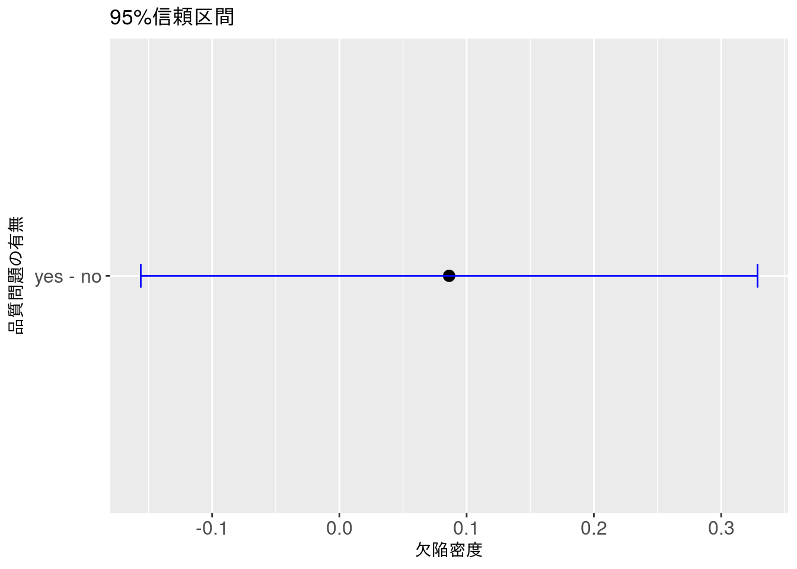
演習 3.5
31プロジェクトの数値データ、カテゴリデータがあります。このデータを使って、カテゴリデータのいずれが、欠陥密度（Defects/KLOC）に強い影響を与えているかを調べてください。 そして、分析結果から欠陥密度を下げるには、どのような改善策が考えられるかを考察してください。
データ説明 各行が１プロジェクトごとのデータとなります。31プロジェクト分のデータが有ります。ただし、全ての項目が入力されている訳ではなく、所々に欠損値が有ります。
データの設定
本演習で利用するデータは予めCSVファイルとして保存されているものとします。
一元配置分散分析
一元配置の分散分析により各因子の有意差を確認します。
factor <- colnames(x)[5:31]
result.aov <- NULL
for(i in factor){
result.aov <- x %>%
aov(defect.density ~ x[[i]], data = .) %>%
anova() %>%
as.data.frame() %>%
na.omit() %>%
mutate(factor = i) %>%
bind_rows(result.aov, .)
}
result.aov## Df Sum Sq Mean Sq F value Pr(>F) factor
## 1 4 82.118391 20.529598 0.28567003 0.884361099 S1
## 2 3 83.647365 27.882455 0.40450994 0.751034544 S2
## 3 3 141.685103 47.228368 0.70905517 0.555688742 S3
## 4 3 39.613300 13.204433 0.18679262 0.904379679 S4
## 5 3 155.766096 51.922032 0.78617066 0.512942845 S5
## 6 4 273.185451 68.296363 1.06874055 0.393624786 S6
## 7 4 140.384105 35.096026 0.50543708 0.732115493 S7
## 8 3 81.803581 27.267860 0.39517077 0.757574631 F1
## 9 4 197.600835 49.400209 0.73673427 0.576065164 F2
## 10 2 3.267724 1.633862 0.02355307 0.976742952 F3
## 11 4 926.139403 231.534851 6.30933631 0.001286331 D1
## 12 4 202.054780 50.513695 0.75543113 0.564349524 D2
## 13 3 71.202200 23.734067 0.34185751 0.795251164 D3
## 14 2 81.042657 40.521329 0.61046286 0.550701105 D4
## 15 2 349.575057 174.787529 3.11842870 0.061103832 T1
## 16 5 167.773402 33.554680 0.47084280 0.794022052 T2
## 17 3 435.259724 145.086575 2.64445366 0.071179229 T3
## 18 2 127.348153 63.674076 0.98571167 0.386691087 T4
## 19 2 56.914730 28.457365 0.42280553 0.659630464 P1
## 20 2 186.351395 93.175698 1.49493227 0.242914313 P2
## 21 3 170.973724 56.991241 0.87094735 0.469248056 P3
## 22 4 206.894057 51.723514 0.77586355 0.551732674 P4
## 23 2 395.781956 197.890978 3.64623538 0.040193440 P5
## 24 2 456.996415 228.498207 4.40111272 0.022581996 P6
## 25 3 322.345474 107.448491 1.80947443 0.171243520 P7
## 26 2 175.248120 87.624060 1.39629358 0.265463338 P8
## 27 2 139.898961 69.949480 1.09101152 0.350764287 P9result <- result.aov %>%
select(factor, p.value = 5) %>%
filter(p.value < 0.05)
result## factor p.value
## 1 D1 0.001286331
## 2 P5 0.040193440
## 3 P6 0.022581996可視化
p値が0.05未満のデータを可視化してみます。
for(i in result$factor){
graph <- x %>%
ggplot(aes(x = x[[i]], y = defect.density)) +
geom_boxplot() +
geom_jitter(colour = "red") +
xlab(i) + ylab("欠陥密度")
print(graph)
}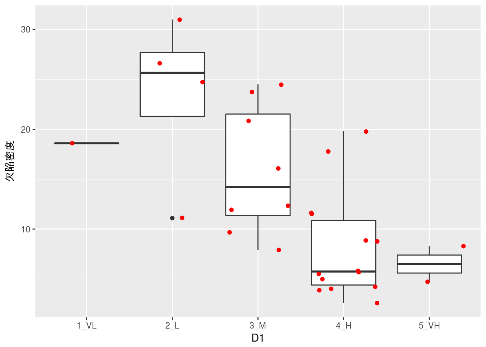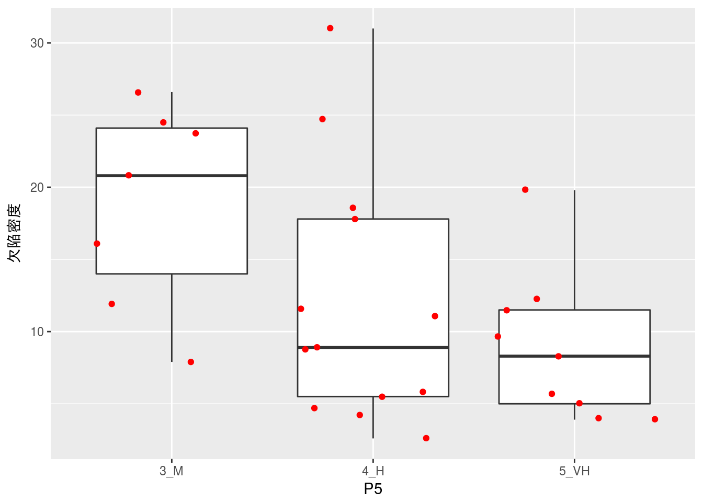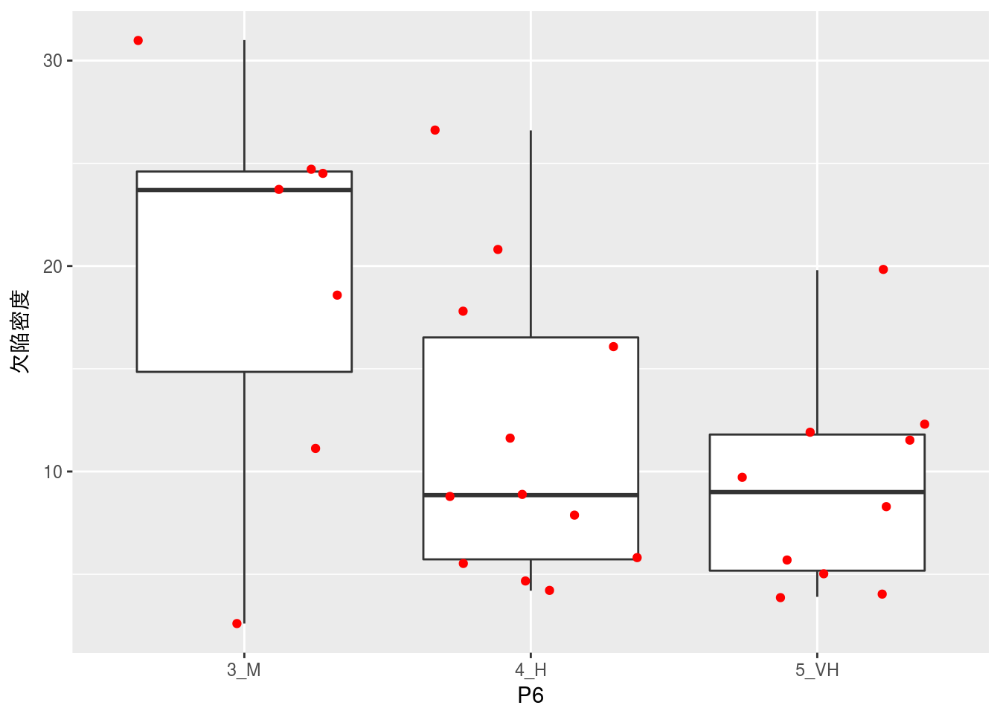
参考)生産性の場合
factor <- colnames(x)[5:31]
result.aov <- NULL
for(i in factor){
result.aov <- x %>%
aov(productivity ~ x[[i]], data = .) %>%
anova() %>%
as.data.frame() %>%
na.omit() %>%
mutate(factor = i) %>%
bind_rows(result.aov, .)
}
result.aov## Df Sum Sq Mean Sq F value Pr(>F) factor
## 1 4 4.3102843 1.0775711 0.39413579 0.81077940 S1
## 2 3 0.8487608 0.2829203 0.10239196 0.95788864 S2
## 3 3 3.0644336 1.0214779 0.38193465 0.76687877 S3
## 4 3 8.2076057 2.7358686 1.10819703 0.36438885 S4
## 5 3 5.6848512 1.8949504 0.73743044 0.53962559 S5
## 6 4 18.0513522 4.5128381 2.08786061 0.11385671 S6
## 7 4 14.1019672 3.5254918 1.51567372 0.22920744 S7
## 8 3 8.2370733 2.7456911 1.11270702 0.36262838 F1
## 9 4 14.9990917 3.7497729 1.63842651 0.19720578 F2
## 10 2 7.8302050 3.9151025 1.63927070 0.21355554 F3
## 11 4 14.0779994 3.5194998 1.51244831 0.23011405 D1
## 12 4 8.1677895 2.0419474 0.79351921 0.54099038 D2
## 13 3 3.5664901 1.1888300 0.44787129 0.72098469 D3
## 14 2 0.6416506 0.3208253 0.12039364 0.88706273 D4
## 15 2 3.1727561 1.5863781 0.61788024 0.54681440 T1
## 16 5 6.0744728 1.2148946 0.43761441 0.81762451 T2
## 17 3 9.3112372 3.1037457 1.28010039 0.30282156 T3
## 18 2 3.7037601 1.8518800 0.72707455 0.49288963 T4
## 19 2 4.1255521 2.0627760 0.81506672 0.45360178 P1
## 20 2 15.5287172 7.7643586 3.71105677 0.03821314 P2
## 21 3 4.1940306 1.3980102 0.53170444 0.66471790 P3
## 22 4 10.6941039 2.6735260 1.08326877 0.38689603 P4
## 23 2 10.7830386 5.3915193 2.37015991 0.11335601 P5
## 24 2 2.1225577 1.0612789 0.40695633 0.66983996 P6
## 25 3 2.8470714 0.9490238 0.35369396 0.78684584 P7
## 26 2 5.5355562 2.7677781 1.11758280 0.34227810 P8
## 27 2 0.3343686 0.1671843 0.06246094 0.93959028 P9result.aov %>%
select(factor, p.value = 5) %>%
filter(p.value < 0.05)## factor p.value
## 1 P2 0.03821314 CC BY-NC-SA 4.0, Sampo Suzuki [2017-04-22 14:23(JST)]
CC BY-NC-SA 4.0, Sampo Suzuki [2017-04-22 14:23(JST)]